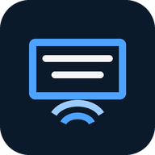

Boatcast
Live slides and words from one phone or laptop to every phone in the room. No internet, no router. Viewers only need a browser.
Install the Android appAndroid 8 or newer. Allow "install unknown apps" when asked.
The first release isn't published yet, so this download won't work until it is.
1 · Host
- Open Boatcast and tap Host. Allow Location (Android needs it to start a hotspot).
- Show the two codes on screen. People scan the Wi-Fi code, then the page code.
- Change slides from the console. Tap Pick slides for your own images or text.
2 · Watch
- Scan the Wi-Fi code, then the page code. Nothing to install.
- Page won't open? Turn mobile data off.
iPhones and Android phones both work.
3 · More than 10 phones: repeaters
- On another Android phone, scan the host's Wi-Fi code and turn mobile data off.
- Open Boatcast and tap Repeater. About 10 more phones join this phone using its own codes.
- Repeaters can chain: about 10 → 100 → 1,000 phones.
The repeater phone must keep Wi-Fi on while its hotspot runs (most recent Android phones can; the app checks). iPhones can watch but can't repeat.
Using a laptop instead
Run it, turn on the laptop's hotspot, then open http://localhost:8080/console.html. Setup details are in the guide.